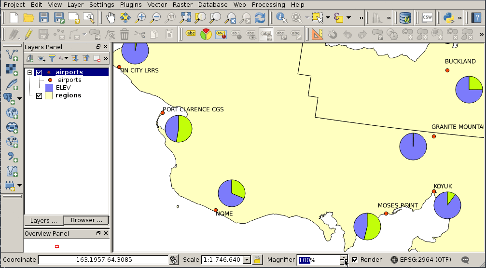
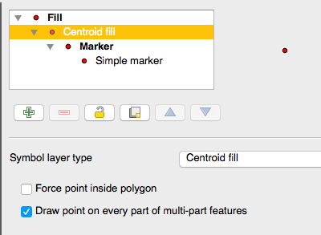
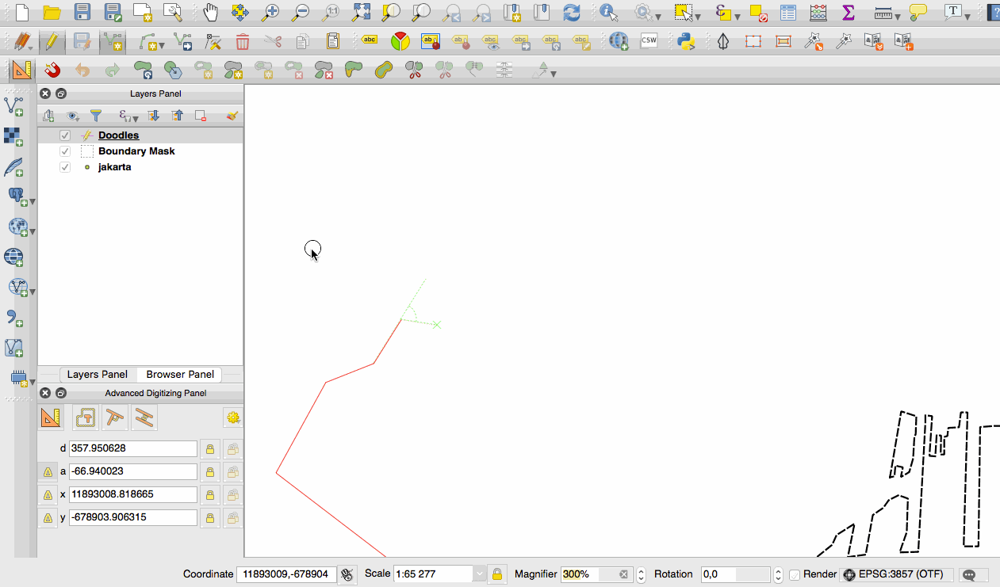
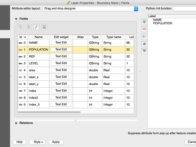
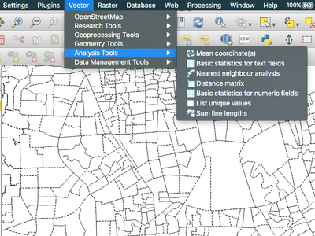
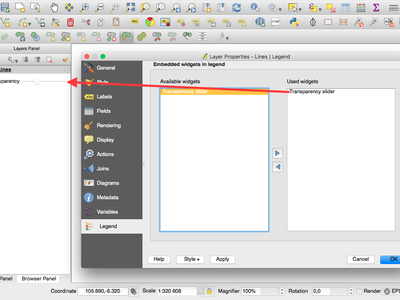

QGIS 2.16の変更履歴¶

これは、QGISの次のリリース、バージョン2.16.0 『Nødebo’のログです。Nødebo大学の地学と自然資源管理森林景観学科は、2015年5月の第1回国際QGIS会議と開発者会議の主催者でした。
これは長期サポートのリリースではありません
このリリースは、長期リリース（LTR）として指定されていません。少なくとも1年間は変更されずにバグ修正を受けるQGISのバージョンを希望するユーザーは、現在のLTRリリース2.14（QGIS 2.16のリリースでは公式のLTRになりました）を使用するように招待されます。
QGIS 2.16 『Nødbo』 の新機能
QGIS 2.14からアップグレードする場合、このリリースでは非常に多くの新機能があります。このQGIS 2.16リリースには、これらのリリースで公開されているすべての機能も含まれているため、 以前のリリース<https://www.qgis.org/en/site/forusers/visualchangelogs.html> __のチェンジログを熟読することをお勧めします。
新しい機能がソフトウェアに追加されるたびに、新しいバグが発生する可能性があります。このリリースで問題が発生した場合は、QGISバグトラッカー<http://hub.qgis.org> `__にチケットを提出してください。
Nødboの紹介|
Nødboの発音を…
ありがとうございます
We would like to thank the developers, documenters, testers and all the many folks out there who volunteer their time and effort (or fund people to do so). From the QGIS community we hope you enjoy this release! If you wish to donate time, money or otherwise get involved in making QGIS more awesome, please wander along to qgis.org and lend a hand!
QGIS is supported by donors and sponsors. A current list of donors who have made financial contributions large and small to the project can be seen on our donors list. If you would like to become an official project sponsor, please visit our sponsorship page for details. Sponsoring QGIS helps us to fund our six monthly developer meetings, maintain project infrastructure and fund bug fixing efforts. A complete list of current sponsors is provided below - our very great thank you to all of our sponsors!
QGISはフリーソフトウェアであり、使用するために何かを支払う義務はありません。実際、財務的または社会的地位にかかわらず、遠くから広く人々にそれを使用するよう奨励したいと考えています。すべての人類にとってより良い社会をもたらします。あなたがQGISをサポートできるなら、あなたはここに寄付することができます|。
- QGISバージョン2.16.0のスポンサー
- 一般情報
- ユーザーインターフェース
- マニュアルの更新
- シンボロジ
- ラベリング
- ダイアグラム
- レンダリング
- デジタイズ
- データ管理
- レイヤ凡例
- マップコンポーザ
- 分析ツール
- 処理
- データプロバイダ
- 機能：OGRデータセットは既定で読み取り専用モードで開きます
- PostgresのDOMAIN型フィールドの扱いが改善されました。
- 機能：プロジェクトで設定可能なベクターレイヤのreadOnlyモードを作成する
- 機能：DB2データベースのサポート
- 機能：PostgresのDBマネージャでのマテリアライズドビューのリフレッシュ
- 機能：OGR FID属性が表示されます
- Feature: ArcGIS Map and Feature REST services
- 機能：MS SQLおよびOracleデータベースのスタイルを保存する
- 機能：レイヤー内のフィールドの名前を変更する
- 機能：Oracle Workspace Managerの基本サポート
- WFSプロバイダの大幅な改善
- Feature：Postgresレイヤーのデフォルト値の生成
- QGISサーバー
- プラグイン
- プログラマビリティ
- 注目すべき修正
QGISバージョン2.16.0のスポンサー¶
毎年、私たちは、私たちがやっていることに感謝し、プロジェクトに取り込まれる持続的な開発努力を促進したい様々な組織からの支持を受けている。これらのスポンサーは、以下に私たちのおかげです。
| |金| | qgis-ch | QGIS Usergroup Switzerland <https://www.qgis.ch/> _、スイス（06.2016-06.2017） |
  State of Vorarlberg, Austria (11.2011-06.2017)
State of Vorarlberg, Austria (11.2011-06.2017) |
 Office of Public Works, Ireland, アイルランド (12.2014-12.2016) Office of Public Works, Ireland, アイルランド (12.2014-12.2016) |
|
GAIA mbh, Germany (06.2013-11.2016) |
 Sourcepole AG, Switzerland (10.2014-10.2016)
Sourcepole AG, Switzerland (10.2014-10.2016) |
www.terrelogiche.com, Italy (06.2015-06.2017) |
QGIS-PT (Portuguese QGIS user group), Portugal (06.2016-06.2017) |
NCC <http://www.ncc.se/en/> _、スウェーデン（05.2016から05.2017） |
SOLTIG (Soluciones en Tecnologías de Información Geográfica), Costa Rica (06.2016-06.2017) |
Gaia3D, Inc., South Korea (05.2015-05.2017) |
GEPOL, Poland (04.2016-04.2017) |
Royal Borough of Windsor and Maidenhead, UK (04.2015-04.2017) |
GFI - Gesellschaft für Informationstechnologie mbH, Germany (04.2015-04.2017) |
Teaching Jobs with Footprints, Canada (04.2016-04-2017) |
FORNAT AG, Switzerland (04.2014-04.2017) |
National Parks UK, United Kingdom (03.2016-03-2017) |
KBB Underground Technologies, Germany (03.2014-03.2017) |
BGEO OPEN GIS, SL, Spain (03.2016-03-2017) |
Ager Technology, Spain (03.2014-03.2017) |
Asociación Geoinnova, Spain (03.2016-03-2017) |
Gis3W, Italy (01.2014-01.2017) |
GIS-Support <http://www.gis-support.com/> _、ポランド（02.2015-03-2017） |
www.molitec.it, Italy (01.2014-03.2017) |
Chartwell Consultants Ltd., Canada (03.2015-03.2017) |
Trage Wegen vzw <http://www.tragewegen.be/> _、ベルギー（03.2015-03.2017） |
GKG Kassel (Dr.-Ing. Claas Leiner), Germany (03.2014-03.2017) |
CawdorForestry Resource Management <http://www.cawdorforestry.com/>、スコットランド（02.2016-02.2017） |
ChameleonJohn <http://www.chameleonjohn.com/>、米国（02.2016-02.2017） |
2D3D.GIS <http://www.2d3d-gis.com/>、フランス（12.2015-12.2016） |
`博士 Kerth + Lampe Geo-Infometric GmbH <http://www.dr-kerth-lampe.de/> `、ドイツ（12.2015-12.2016） |
MappingGIS <http://www.mappinggis.com/> _、スペイン（11.2015-11.2016） |
HostingFacts.com <https://hostingfacts.com/>、エストニア（12.2015-12.2016） |
Urbsol, Australia (11.2014-11.2016) |
Lutra Consulting <http://www.lutraconsulting.co.uk/>、英国（10.2015-10.2016） |
WhereGroup GmbH＆Co. KG <http://wheregroup.com/>、ドイツ（08.2015-08.2016） |
Nicholas Pearson Associates, UK (07.2015-07.2016) |
QGIS Polska, Poland (07.2015-07.2016) |


一般情報¶
機能：GeoJSON形式での地物のコピー¶
以前の機能をコピーするときのWKTの設定は、「プレーンテキスト、属性のみ」、「プレーンテキスト、WKTジオメトリ」、および新しい「GeoJSON」オプションとしてコピー機能の選択肢に置き換えられました。「GeoJSON」に設定すると、QGISの機能をコピーすると、機能のGeoJSONテキスト表現がクリップボードに配置され、他のアプリケーション/ JavaScriptコードに簡単に貼り付けることができます。これらの設定は、 設定 -> オプション -> データソース -> 形式を選択して地物をコピー にあります。

この機能は、Nyall Dawson（North Road）<http://northroadroad.com>によって開発されました。__
機能：空間ファイルのブックマークをプロジェクトファイルに保存する¶
空間的なブックマークを作成する場合は、アクティブなプロジェクトファイルにブックマークを保存することができます。ブックマークパネルをスクロールして、この機能を有効にするチェックボックスを見つけます。

この機能は `StéphaneBrunner <http://www.camptocamp.com/>`によって開発されました__
機能：GNSS GNRMCメッセージのサポート¶
QGISはGLONASS衛星データ（$ GN *ライン）を処理し、外部GPS / GNSSレシーバからより正確な位置を取得できるようになりました。

この機能はOndřejFibichによって開発されました
機能：GeoJSONの機能をQGISに直接ペーストする¶
QGISクリップボードハンドラは、GeoJSON地物コレクションのネイティブサポートを含む多くの追加のテキストフォーマットを解析できるようになりました。これにより、GeoJSON文字列を直接コピーしてQGISに貼り付け、QGISの地物とジオメトリに自動的に変換させることができます。

この機能は、Nyall Dawson（North Road）<http://northroadroad.com>によって開発されました。__
機能：マップのヒントの改善¶
- Maptipの可視性がセッション間で保存されるようになりました
- Maptipsは画像、動画、URLリンクなどのHTMLコンテンツを表示できるようになりました

この機能は、 OPENGIS.ch GmbH <http://www.opengis.ch> __
この機能は、 Marco Bernasocchi（OpenGIS.ch）<http://www.opengis.ch> __
機能：QGISファイルタイプのデスクトップMIMEアイコン¶
オペレーティングシステムのファイルマネージャで、QGISのファイルタイプを認識して区別することが簡単になりました。次のファイルタイプのデスクトップMIMEアイコンが追加されました。
- *.qgs - QGISプロジェクトファイル
- *.qml - レイヤー設定ファイル
- *.qlr - レイヤー定義ファイル
- *.qpt - コンポーザテンプレート ファイル

この機能は `Alexandre Neto <https://gisunchained.wordpress.com/>によって開発されました__
ユーザーインターフェース¶
機能：地図キャンバスの拡大鏡¶
拡大鏡ツールがQGISに追加されました。これにより、指定された縮尺で地図を拡大することができます。これにより、地図の縮尺を変えずにマップを拡大することができ、ラベルやシンボルの位置を簡単に微調整することができます。さらに、デフォルトの倍率値を設定で定義することができます。これは、高解像度のスクリーンに非常に便利です！

この機能は QWATプロジェクト<https://github.com/qwat> __
この機能は Paul Blottiere（Oslandia）<http://oslandia.com/> __によって開発されました
機能：地図のズーム機能の改善¶
QGIS 2.16では、マップキャンバスをズームイン/ズームアウトする方法が改善されました。
- マウスホイールを使用してズームインまたはズームアウトすると、kbd： `Ctrl`を押し続けると、ズームが細かくなります。この動作により、キャンバスはコンポーザーと一直線になります。
- kbd： `Ctrl ++`や：kbd： `Ctrl + -`を押すと地図キャンバス上で即座にズームイン/ズームアウトします
- 特定のマップツールがアクティブな場合は、kbd： `Shift`キーを押しながら地図上に長方形をドラッグすると、その領域をズームしてWebマップスタイルのズームを実行できます。これは、選択ツールではないマップツール（選択に追加するためにシフトを使用するため）とツールを編集できるようにします。

この機能は、Nyall Dawson（North Road）<http://northroadroad.com>によって開発されました。__
特長：インタラクティブなグラデーションエディタを再設計¶
グラデーションランプエディタは、グラデーションを簡単に操作できるインタラクティブコントロールで再加工されました。ダイアログには、カラーHSVまたはRGB値を使用してグラデーションストップを変更するためのインタラクティブなプロットも含まれています。新しいエディタの特徴：
- ドラッグしてカラーストップを移動する
- ダブルクリックして新しい停止点を追加する
- 削除を押すと選択したストップが削除されます
- 矢印キーを押すと選択したストップが移動し、カーソルキーを押しながらシフトを続けると移動が大きくなります
- ウィジェットに色をドラッグ＆ドロップして新しい停止点を追加する

この機能は、Nyall Dawson（North Road）<http://northroadroad.com>によって開発されました。__
Feature：属性ダイアログのデフォルトビューの選択¶
以前のQGISのバージョンでは、属性ダイアログは常にテーブルビューで開かれていました。これで、ダイアログを常にテーブルビュー、フォームビューのいずれかにデフォルト設定するか、または最後に使用したビューを覚えておくことができます。

この機能は、Nyall Dawson（North Road）<http://northroadroad.com>によって開発されました。__
機能：カレンダーポップアップの改善¶
カレンダーポップアップウィジェットで今日の日付が強調表示され、現在の日付に関連する日付を簡単に選択できます。

この機能は、Nyall Dawson（North Road）<http://northroadroad.com>によって開発されました。__
機能：改良されたカラーピッカー¶
カラーボタンのドロップダウンメニューにカラーホイールが表示され、色を非常に迅速に調整できます。

この機能は `Nathan Woodrow <http://nathanw.net>`によって開発されました__
機能：セルの内容を属性テーブルからコピーする¶
属性テーブル内のセルを右クリックして開くメニューで、「セル内容のコピー」という新しいコンテキストメニュー項目を使用できるようになりました。このボタンをクリックすると、ウィジェットの種類にかかわらず、セルの内容がクリップボードにコピーされます。

この機能は Paul Blottiere（Oslandia）<http://oslandia.com/> __によって開発されました
特長：HiDPIサポートの強化¶
HiDPI画面のユーザーは、SVG画像に依存するようにアイコンをアップグレードする作業が増えているため、ユーザーインターフェイスが向上しています。QGIS 2.16以降、すべてのツールバーはHiDPIと互換性があります。

この機能は `Mathieu Pellerin <http://imhere-asia.com/>`によって開発されました__
特長：マップ選択ツールの動作を改善¶
マップベースの選択ツールの動作は洗練され、以下の変更が加えられました。
クリックアンドドラッグの選択肢：
- 保持：kbd： Shift =選択範囲に追加
- 保持：kbd： Ctrl =選択から減算する
- 保持：kbd： Ctrl + Shift =現在の選択と交差する
- 保持：kbd： Alt`（kbd： Shift` /：kbd： `Ctrl`でも使用可能）=」交差 「から」完全に含む 「選択モードに変更
シングルクリックの選択：
- ：kbd： Shift`または：kbd： Ctrl` =機能が選択されているかどうかをトグルする（すなわち、現在の選択に追加するか、現在の選択から削除するか）
この変更により、キャンバスの動作が他のデザインアプリやコンポーザーの動作と一致します。

この機能は、Nyall Dawson（North Road）<http://northroadroad.com>によって開発されました。__
マニュアルの更新¶
機能：QGIS 2.14ドキュメント¶
QGISの新機能ごとにドキュメンテーションリポジトリにチケットを自動的に作成する方法があるので、私たちはすべての新機能がドキュメントに含まれていることを確信しています。
ドキュメンテーションチームは、QGISの3つのリリース（2.10,2.12、2.14）を執筆しましたので、QGISの現在のロングタームリリースのドキュメントが最新です。これは4ヶ月で文書化された約180の新機能です。
ドキュメントに欠落している機能がいくつかあると思われる場合は、新しいチケットを追加したり、小さなテキストを書いたり、投稿をよりよくプッシュしたりしてください。
ドキュメンテーションチームは、新しい文書作成者や翻訳者の貢献を促進するために、ドキュメントのガイドラインの改善にも取り組んできました。
ドキュメンテーションチームは、QGISの現在の安定版（2.16）を文書化するために、次の数か月間厳しい作業を行うようになります。

2.10、2.12、および2.14マイルストーンをチェックして、行われたすべての文書作業を確認してください。
機能：ユーザーマニュアルの認証システムのドキュメント¶
以前のバージョンのQGIS（2.12および2.14）で導入された認証システムの機能は、Usersのマニュアルに完全に記載されており、システムの理解と導入に大きく貢献します。

この機能は Boundless <http://boundlessgeo.com/> __によって資金提供されました
この機能はLarry Shafferによって開発されました
シンボロジ¶
機能：矢印シンボルレイヤー¶
「矢印」シンボルレイヤは、ラインレイヤから直線または曲線の矢印を描くことを可能にするシンボルレイヤです。
カーブモードでは、このシンボルレイヤが適用される線レイヤのノードが円弧の制御点として使用されます。QGISがサポートしている既存の塗りつぶしスタイルがあれば、矢印を塗りつぶすことができます。オプションでは、矢印のタイプ（1つまたは2つのヘッド、プレーンまたはハーフ）、幅（可変でもよい）、およびヘッドのサイズを選択することもできます。

この機能は、MEEM（フランス政府持続可能な発展省）<http://www.developpement-durable.gouv.fr/> `__とAndreas Neumann
この機能は `Hugo Mercier <http://oslandia.com/>`によって開発されました__
機能：新しい「塗りつぶされたマーカー」シンボルレイヤータイプ¶
「塗りつぶしされたマーカー」は、単純なマーカーシンボルレイヤーに似ていますが、塗りつぶしサブシンボルを使用してマーカーを描画します。これにより、マーカーを描画するための既存のQGIS塗りつぶし（およびアウトライン）スタイルをすべて使用することができます（グラデーションやシェイプバースト塗りなど）。

この機能は、Nyall Dawson（North Road）<http://northroadroad.com>によって開発されました。__
機能：新しいアクセシビリティと低視力シンボル¶
QGISのSVGシンボルコレクションで、追加のアクセシビリティと低ビジョンシンボルを利用できるようになりました。

この機能は `Mathieu Pellerin <http://imhere-asia.com/>`によって開発されました__
機能：新しい単純なマーカー記号¶
- 半円、三分の一、四分円
- ハーフトライアングルマーカー
- 十字マーカーと六角マーカー
- diamond ellipse marker

この機能は `Mathieu Pellerin <http://imhere-asia.com/>`によって開発されました__
Feature： 「シンボルなし」レンダラー¶
QGIS 2.16で新しい「シンボルなし」レンダラを使用すると、地物にはシンボルは描画されませんが、ラベル、ダイアグラム、その他の非シンボル部分は引き続き表示されます。
キャンバス内のレイヤーでも選択を行うことができ、選択された地物はデフォルトのシンボルでレンダリングされます。編集中の地物も表示されます。
これは、ラベルや図表だけを表示したいレイヤーのための便利なショートカットとして意図されており、これを達成するために完全に透明な塗りつぶし/枠線でシンボルをレンダリングする必要がありません。それはタイトルからは役に立たないかもしれませんが、かなり簡単なショートカットです！

この機能は、Nyall Dawson（North Road）<http://northroadroad.com>によって開発されました。__
機能：セントロイドの塗りつぶしポイントレンダリングをより詳細に制御¶
マーカーがマルチ地物のすべてのパーツまたは単一のパーツに描画されるかどうかを制御するオプションが追加されました。

この機能は `Mathieu Pellerin <http://imhere-asia.com/>`によって開発されました__
機能：フォントマーカーシンボルのアウトライン設定¶
フォントマーカー記号にアウトラインを付けることができます。アウトラインバッファーの色を追加することで、このような記号の可視性を高めることができます。絵文字が有効なフォント文字は、太い輪郭で使用すると素晴らしいマーカーとして機能します。

この機能は `Mathieu Pellerin <http://imhere-asia.com/>`によって開発されました__
機能：シンプル、楕円、フォントマーカーのアウトライン結合スタイルを制御¶
シンプル、楕円、フォントマーカーのアウトラインの結合スタイルを変更して、シンボルを微調整することができます。

この機能は `Mathieu Pellerin <http://imhere-asia.com/>`によって開発されました__
Feature：ポイントシンボルオフセットをインタラクティブに設定する新しいマップツール¶
オーバーライドで定義されたデータを使用してフィールドにバインドされている場合、ポイントのオフセットを設定できます。オフセットフィールドはテキストフィールドでなければなりません。オフセットをインタラクティブに設定するためのマップツールは、アイコングループの `` Advanced digitizing``ツールバーの `` Rotate Point Symbols``ツールを使います。例については添付のアニメーションを参照してください。後でオフセットを調整するときは、マップ上にレンダリングされたシンボルの現在の位置ではなく、元のポイントの頂点マーカーからドラッグする必要があります。

この機能は、Nyall Dawson（North Road）<http://northroadroad.com>によって開発されました。__
機能：スタイルドック¶
スタイルドックは、QGISのレイヤースタイルを管理する新しい効率的な方法です。作成されたスタイルの変更のライブプレビュー、完全な元に戻す/やり直しのサポート、地図の作成を準備する際の注意散漫なワークフローをサポートしています。スタイルドックの機能の包括的な概要については、 `スタイルドックパート1 <https://nathanw.net/2016/06/25/improving-you-styling-with-the-qgis-style-dock-part- 1 /> `__と`スタイルドックパート2 <https://nathanw.net/2016/06/29/qgis-style-dock-part-2-plugin-panels/> `__。

この機能は `Nathan Woodrow <https://nathanw.net/>によって開発されました__
ラベリング¶
Feature：マップツールのラベリングは、ルールベースのラベリング¶
以前のバージョンのQGISでは、ルールベースのラベリングが行われていたときに、ラベリングマップツールを使用してインタラクティブにラベル位置を配置して回転することはできませんでした。これは現在サポートされています。
この機能はMartin Dobiasによって開発されました
ダイアグラム¶
機能：図サイズの凡例エントリ¶
ダイアグラムのプロパティに新しい「凡例」タブが追加され、既存の属性の凡例と新しいサイズの凡例の両方を有効/無効にすることができます。サイズの凡例には設定可能なマーカー記号があります。

この機能は、ADUGA <http://www.aduga.org/>によって資金提供されました__
この機能は、Nyall Dawson（North Road）<http://northroadroad.com>によって開発されました。__
機能：アウトライン幅の単位選択¶
アウトライン幅単位の選択が可能になりました。これにより、地図の単位の大きさの図が、マップの縮尺に基づいて拡大縮小され、固定されたミリメートルの輪郭幅を維持することが可能になる。

この機能は `Mathieu Pellerin <http://imhere-asia.com/>`によって開発されました__
機能：ダイアグラムはラベルのように動作し、ツールバーから管理できます¶
もともと、ラベルのためのツールバーがありました：
- 現在のレイヤのラベルにラベル設定オプションを設定する
- 固定されたラベルを強調表示します。強調表示は編集可能なレイヤーでは緑、それ以外の場合は青色になります。
- ピンまたはピンを固定しないラベル
- ラベルの移動、表示、非表示
この新しい機能を使用すると、ラベルツールバーに新しいツールが表示され、現在のレイヤーの図のプロパティを設定できます。さらに、上で述べた各ツールは、図でも完全に使用できるようになりました。

この機能は、MEEM（フランス政府持続可能な発展省）<http://www.developpement-durable.gouv.fr/> `__
この機能は Paul Blottiere（Oslandia）<http://oslandia.com/> __によって開発されました
レンダリング¶
機能：オンザフライでの簡略化のための新しいオプション¶
ジオメトリを高速に描画するためにローカル側の簡略化を実行するときに、使用するアルゴリズムを選択できます。現在、QGISは3つのアルゴリズムを提供しています。
- 距離（既定のアルゴリズム、および以前のQGISリリースで利用可能な唯一のオプション）
- グリッドにスナップ
- 全能者
この変更により、ローカルの「その場で」単純化がプロバイダーおよびイテレータクラスからレンダリングコードに移行します。これにより、ベクターデータプロバイダーから取り出されたジオメトリが単純化され、ルールベースおよびその他の式ベースのシンボルに影響を及ぼす可能性があります。これは、地物ジオメトリ（領域の計算など）を使用する式を使用する場合に重要です。これらの計算は、単純なものではなく元のジオメトリに対して行うことを確認します。

この機能は Alvaro Huarte <https://es.linkedin.com/in/alvarohuarte> __によって開発されました
機能：ラスターレイヤのQuantileベースの分類¶
このオプションは、 `` mode``ダイアログの分類において、シングルバンドの擬似カラーラスタで見つけることができます。

この機能はPiers Titus van der Torrenによって開発されました
Feature：ライブシェイプレンダラー¶
QGIS 2.16には、デジタル標高モデルから陰影モデルを動的に作成する新しいラスターレンダラーがあります。

この機能は、Asger Skovbo PetersenとNathan Woodrowによって開発されました
デジタイズ¶
機能：制約の「繰り返し」ロックモード¶
有効にすると、新しいポイントが追加されると、繰り返しロックは自動的にクリアされません。複数のポイントに対して同じ制約を繰り返す必要がある場合（たとえば、常に50メートル離れた頂点を追加するなど）は便利です。この機能は、「高度なデジタイザパネル」で利用できます。

この機能は、Nyall Dawson（North Road）<http://northroadroad.com>によって開発されました。__
機能：変形ツールで線ストリングの形状を拡張する¶
形状変更ツールでは、線の始点または終点のいずれかで形状を変更することで、線ストリングを拡張することができます。

この機能はMartin Dobiasによって開発されました
機能：セグメンテーションの許容誤差¶
セグメント化許容差（最大角度または最大差）を設定するためのサポートが追加されました。この設定は、円弧をレンダリングする方法を制御します。最大角度（度）または最大差（マップ単位）が小さいほど、レンダリング中に直線部分が多く使用されます。このオプションは ``設定 - >オプション - >レンダリング - >カーブセグメンテーション ``で見つけることができます。

この機能はMarco Hugentoblerによって開発されました
データ管理¶
Feature：属性テーブルの新しい設定オプション¶
- 属性テーブルの列を並べ替えることを許可する（フィールド名のヘッダーを右クリック - > 「列の整理」ダイアログ、ドラッグアンドドロップで並べ替える）
- 選択した機能に基づいてアクションをトリガーするためのボタンを保持するために、属性テーブルに新しい列を追加できるようにする
- カラムは属性テーブルから非表示にすることができます（フィールド名ヘッダを右クリックして）
- QGISは、サイズ変更された列の幅を記憶するようになりました

この機能は、スイスのZugのCanton（スイス<http://geo.zg.ch/>）とMEEM（フランスの持続可能な発展省）によって資金提供されました。<http://www.developpement-durable.gouv.fr/ > `__
この機能は、StéphaneBrunner（Camptocamp）<http://www.camptocamp.com/> __と Matthias Kuhn（OPENGIS.ch）<http://www.opengis.ch/> `__によって開発されました
機能：属性フォームの複数の列¶
ドラッグアンドドロップデザイナーを使用する場合、ユーザーは、フィールドの分配する列の数を指定できます。
レイヤプロパティの[フィールド]タブで複数の列を有効にするには：
- ドラッグ＆ドロップデザイナーフォームモードを使用していることを確認してください
- タブまたはグループなどのグループコンテナをダブルクリックします。
- 列の数を選択できる小さなダイアログが表示されます
順序は、最初の列、2番目の列、n番目の列、次の行などになります。

この機能は、スイスのZugのCantonによって資金提供されました。<http://geo.zg.ch/> `__
この機能はMatthias Kuhn <http://www.opengis.ch/>によって開発されました__
機能：ベクターレイヤーを保存するときにエクスポートする属性を制御する¶
チェックボックスが追加され、エクスポートに含める属性を選択できるようになりました。また、生の値ではなく「表示された」値を書き込むこともできます。このオプションは、数値識別子ではなくリテラル値を含むリレーションを持つレイヤーに便利です。
データ形式に応じて、デフォルトでは、たとえばスプレッドシート形式（ODF、XLSX、CSV / Text）へのエクスポートの場合、「表示値」が有効になります。

この機能の一部は、スイスのZugのCantonによって資金提供されました。<http://geo.zg.ch/> `__
この機能はJürgenFischer、Even Rouault
機能：フォームビュー：サイドカラムがソート可能¶
QGIS属性テーブルのフォームモードには、特定の機能に直接ジャンプするために使用できるサイドカラムがあります。このリリースまで、この側面図はソートできませんでした。ソートのためには、テーブルモードにジャンプしてからフォームモードに戻らなければなりませんでした。サイドパネルの地物属性プレビューで、サイドカラムの上にある式のドロップダウンボタンでソート機能を選択することで、地物を直接ソートできます。

この機能は、スイスのZugのCantonによって資金提供されました。<http://geo.zg.ch/> `__
この機能はMatthias Kuhn（OpenGIS）<http://www.opengis.ch/>によって開発されました__
機能：関係参照ウィジェット：新しい値を追加するためのショートカット¶
リレーション参照ウィジェットは、関連する値リストをすばやく拡張できるように拡張されました。ウィジェットプロパティ（レイヤプロパティの[フィールド]タブを介したアクセス）で「新しい機能の追加を許可する」チェックボックスが有効になっている場合、ウィジェットの右側に緑色のプラスボタンが表示されます。」Plus」ボタンを押すと、関連するテーブルのダイアログが 「新規レコード」モードで開き、追加のエントリを追加できます。

この機能は、スイスのZugのCantonによって資金提供されました。<http://geo.zg.ch/> `__
この機能はMatthias Kuhn（OpenGIS）<http://www.opengis.ch/>によって開発されました__

{kind=link}
{kind=link}
{kind=link}
機能：ドラッグ＆ドロップデザイナーのトップレベルウィジェット¶
ドラッグアンドドロップデザイナーを使用してフォームに直接ウィジェットを配置することが可能になりました。したがって、ドラッグ・アンド・ドロップのデザイナー・フォームはタブなしで存在することができます。

この機能はMatthias Kuhn <http://www.opengis.ch>によって開発されました__
機能：フォームベースの選択とフィルター¶
QGIS 2.16では、機能を検索およびフィルタリングするための新しいモードが属性テーブルダイアログに追加されました。（ツールバーのボタンを使用するか、kbd： `CTRL + F`を押して）有効にすると、ダイアログがフォームビューに切り替わり、すべてのウィジェットが検索ウィジェットのラッパーバリアントに置き換えられます。
各ウィジェットは、例えば「に等しい」、そのフィールドの検索/フィルタの動作を制御するためのオプションを備えたツールボタンで、「等しくない」、「nullである」と並んで、など、「より大きい」..、選択肢を提示して対応するフィールドとウィジェットタイプに一致します。
フォームの下部に新しいボタンが表示され、一致する地物を選択するか（選択範囲の追加/選択範囲からの選択/現在の選択範囲内での選択）、または表内の地物のフィルタリング（現在のフィルターに地物を追加するオプション、現在のフィルタ）。
新しい「値で選択」オプションを使用するか、レイヤーを選択してF3キーを押して、このモードにアクセスすることもできます。

この機能は、SIGE、Uster市、Morges
この機能は、Nyall Dawson（North Road）<http://northroadroad.com>によって開発されました。__
Feature：GeoPackageレイヤーを作成する¶
GeoPackage <http://www.geopackage.org> __フォーマットは、ESRI Shapefileフォーマットの代わりにレーダー上に置くべき地理空間データのオープンスタンダードです。これは、フィールドの数と幅の制限を含む形状ファイル形式の多くの欠点に対処します。QGIS 2.16では、 `` Layer``ツールバーと `` Layer - > Create Layer``メニューに統合されたので、新しいGeoPackageを簡単に作成することができます。
この機能はEven Rouaultによって開発されました
機能：ウィジェットの制約¶
以前のQGISのバージョンでは、ユーザーが地物の属性に対して入力した値の妥当性をチェックする方法はありませんでした。これからはユーザーは、レイヤーの属性フォーム内の各ウィジェットに制約を指定できます。制約は、 "min_population"> 50000 のように、QGISの式を使用して作成されます。フィールドに値を入力する必要があることを示すために、「Nullではない」チェックボックスを使用することもできます。さらに、制約が失敗した場合に役立つフィードバックをユーザに与えるために、記述テキストを追加することもできます。
制約は、ユーザーが地物を変更している間に評価されます。ツールチップは、制約のあるフィールドで使用でき、制約の式、評価の結果、および制約の説明を表示します。また、フォームの上部には、制約条件を満たすフィールドを要約したメッセージバーが表示されます。

この機能は `QWATプロジェクト<https://github.com/qwat>`とスイスのツークの<http://geo.zg.ch/> `__
この機能は、 Matthias Kuhn（OPENGIS.ch）<http://www.opengis.ch> __と Paul Blottiere（Oslandia）<http://oslandia.com/> __によって開発されました
機能：複数の地物の属性を同時に編集する¶
この変更により、複数の地物の属性を同時に編集できます。これは、ツールバーの新しい「マルチ編集」ボタンを使用して、属性テーブルダイアログが「フォームモード」になっているときに有効になります。また、選択した複数の地物を 編集 -> Modify Attributes in Selected Features を使って編集するためのショートカットもあります。
このモードでは、選択したすべての機能に属性値の変更が適用されます。新しいウィジェットが各エディタウィジェットの横に表示され、現在の複数編集状態を表示し、フィールドごとに変更をロールバックすることができます。
変更は1つの編集コマンドで行われるため、Undoを押すと選択したすべての地物の属性変更が一度にロールバックされます。
Multiteitモードは、自動生成およびドラッグアンドドロップフォームでのみ使用できます。カスタムUIフォームではサポートされていません。

この機能は Kanton Basel Stadt <http://www.geo.bs.ch/> __によって資金提供されました
この機能は、Nyall Dawson（North Road）<http://northroadroad.com>によって開発されました。__
レイヤ凡例¶
Feature：レイヤの可視スケール範囲を拡大する新しいオプション¶
可視スケール範囲が設定されているレイヤーの場合、このオプションを選択すると、自動的にレイヤーが表示される最も近いスケールにスケールが設定されます。さらに、スケール範囲外で隠れているレイヤーがレイヤーツリーでグレー表示されるように、インターフェイスが調整されています。

この機能は、MEEM（フランス政府持続可能な発展省）<http://www.developpement-durable.gouv.fr/> `__
この機能はPatrick Valsecchi（Camptocamp）<http://www.camptocamp.com/>によって開発されました__
マップコンポーザ¶
機能：ポリゴンとポリラインを描画するための新しいツール¶
ノードに基づいた2つの新しいタイプのコンポーザシェイプアイテムが、マップコンポーザーで使用できるようになりました。これらを使用すると、数回のクリックでコンポジション内のポリゴンまたはポリラインを描画できます。
ノードの編集（ノードの移動や削除）を可能にし、既存のシェイプに新しいノードを追加するための新しいツールも追加されました。Composerポリゴンとポリラインアイテムは、ラインレイヤーとポリゴンレイヤーで使用できるすべてのシンボルスタイルを使用してスタイリングすることもできます。

この機能は、MEEM（フランス政府持続可能な発展省）<http://www.developpement-durable.gouv.fr/> `__
この機能は Paul Blottiere（Oslandia）<http://oslandia.com/> __によって開発されました
機能：コンポーザラベルの相対リンク¶
ラベルとHTMLボックスには、相対URLを含めることができます。ベースURLがない場合、プロジェクトファイルはベースURLとして使用されます。

この機能は、MEEM（フランス政府持続可能な発展省）<http://www.developpement-durable.gouv.fr/> `__
この機能はPatrick Valsecchi（Camptocamp）<http://www.camptocamp.com/>によって開発されました__
機能：GeoJSONをソースとしてコンポーザのHTMLソースに地図帳の機能を埋め込む¶
この変更により、現在のアトラス機能（および関連する子機能のすべての属性）がコンポーザーHTML項目のソースで使用できるようになり、項目のプロパティーに応じてレンダリングされたHTMLを動的に調整できるようになります。使用例では、アトラス機能の関連する子機能のすべての属性をHTML表に動的に取り込みます。
これを使用するには、HTMLソースは 「setFeature（feature）」 JavaScript関数を実装する必要があります。この関数は、アトラス機能が変更されたときに呼び出され、アトラス機能（およびすべての関連する属性）がGeoJSON機能として渡されます。

この機能は、スイスのZugのCantonによって資金提供されました。<http://geo.zg.ch/> `__
この機能はNyall Dawson（North Road）<http://northroadroad.com/>によって開発されました__
機能：コンポーザーSVG画像のパラメーター化されたSVGサポート¶
この変更により、QGISに含まれているSVGファイルなどのパラメータ化されたSVGファイルを使用しているときに、SVGファイルの塗りつぶしや輪郭の色を変更したり、輪郭の幅を変更することができます。パラメータ化されたSVGファイルの詳細については、この記事<http://blog.sourcepole.ch/2011/06/30/svg-symbols-in-qgis-with-modifiable-colors/> `__を参照してください。

この機能は、Nyall Dawson（North Road）<http://northroadroad.com>によって開発されました。__
機能：ラベルにHTMLを簡単に使用する¶
QGIS 2.16では、コンポーザーラベルの基本スタイルシートが自動的にラベルのフォントとマージンをラベルの設定に合わせて設定します。これにより、インタラクティブなフォント、マージン、色の選択が可能になり、ラベルHTMLコード内でCSSでこれらを手動で設定する必要がなくなります。

この機能は、Nyall Dawson（North Road）<http://northroadroad.com>によって開発されました。__
機能：コンポーザからのジオリファレンス出力（PDFなど）¶
QGIS 2.16では、マップコンポーザーが出力を自動的にジオリファレンスします（出力フォーマットでこれを可能にする場合、TIFやPDFなど）。
ワールドファイルを作成する既存のオプションは、地理参照のためのマップ選択から分離されています。新しい動作は、常に出力をジオリファレンスすることです。そのオプションがチェックされている場合は、別のワールドファイルのみを作成します。

この機能は、Nyall Dawson（North Road）<http://northroadroad.com>によって開発されました。__
機能：コンポーザ地図はプリセットで自動更新されるようになりました¶
コンポーザーマップがスタイルプリセットに従うように設定されている場合は、スタイルが変更されるたびに自動的に更新されます。
コンポボックスのマッププロパティに新しいオプションが追加されました：コンボボックスで「可視性プリセットに従う」を選択してアクティブなプリセットを選択します。これは、プリセットの設定をコピーするだけの 「ロックレイヤー」（および 「ロックレイヤースタイル」）機能に代わるもので、この新しいオプションはプリセットへのリンクを作成します。
違いは、プリセットが更新されると、コンポーザーマップはプリセットに従うとき自動的に新しい構成を選択し、「レイヤーをロックする」（および「レイヤースタイルをロックする」）オプションが使用されている場合は更新されません。

この機能はMartin Dobiasによって開発されました
分析ツール¶
機能：式の名前付きパラメータ¶
QGIS 2.16では、式エンジンが名前付きパラメータの使用をサポートするようになりました。つまり、暗黙の式を書くのではなく、 `` clamp（1,2,3） ``を使うことができます： `` clamp（min：= 1、value：= 2、max：= 3） ``。この変更でも引数を切り替えることができます。例えば、 `` clamp（value：= 2、max：= 3、min：= 1） ``です。
名前付きパラメータを使用すると、式関数の引数が参照するものを明確にすることができます。これは、後で式を解釈しようとするときに役立ちます。
この機能は、Nyall Dawson（North Road）<http://northroadroad.com>によって開発されました。__
機能：遠距離ユニット¶
距離単位の選択肢が広がり、キロメートル、ヤード、マイルなどの新しいオプションが追加されました。これらのユニットを使用すると、手動で距離を変換する必要がなくなります（例：フィートをマイルに変換）。

この機能は、Nyall Dawson（North Road）<http://northroadroad.com>によって開発されました。__
Feature: Changes to expressions¶
- `` date + time`` = datetimeの計算をサポートします
- `` date - date``、 `` time - time``、および `` datetime - datetime``型の計算をサポートしています。
- ユニコード値で一致する文字を返す新しい `` char（） ``関数
機能：文字列と日付フィールドの統計¶
統計サマリードックは、文字列と日付フィールドの集計統計を計算できるようになりました。

この機能は、Nyall Dawson（North Road）<http://northroadroad.com>によって開発されました。__
機能：インフォメーションツールでカーブポイントの半径を表示¶
インフォツールを使用して曲線をクリックすると、QGISはインフォツールに半径を表示します。

この機能はMarco Hugentoblerによって開発されました
機能：式の集約サポート¶
QGIS 2.16では、いくつかのタイプの集約のサポートがエクスプレッションエンジンに追加されています。これらには、
- `` sum（ 「passengers」）、 `` sum（ 「passengers」、group_by：=）などのサブ式をサポートしています。 「line_segment」） ``）、およびオプションのフィルタ（ `` sum（ 「passengers」、filter：= 「station_class」> 3）
relation_aggregate( 'my_relation', 'mean', "some_child_field" )のように、リレーションからすべての一致する子地物に対する集計を計算するリレーショナル集計。- 他のレイヤーでの集計を計算するサマリー集計関数。例えば、 `` aggregate（ 『rail_station_layer』、 『sum』、 『乗客』） ``です。の合計数を計算するため、 `` 集計（「rail_stations」、「合計」、「乗客」、交差（@atlas_geometry、$ジオメトリ））：サマリー集約関数は、それが可能のようなものを計算すること、オプションのフィルタをサポートしています現在のアトラス機能内のステーションの乗客
すべての場合、計算は式コンテキスト内にキャッシュされるため、式評価の各セットに対して1回計算する必要があります。
この機能は、スイスのZugのCantonによって資金提供されました。<http://geo.zg.ch/> `__
この機能は、Nyall Dawson（North Road）<http://northroadroad.com>によって開発されました。__
機能：fToolsプラグインが処理アルゴリズムに置き換えられました¶
fToolsは、QGISの `` Vector``メニューにあるツールを長年にわたって提供してきたコアプラグインです。QGIS処理フレームワークの出現により、fToolsは重複した作業を代表するようになり、多くのツールが同等の処理能力で改善されました。この問題を解決するために、fToolsプラグインはQGISから削除され、同等のメニューエントリがベクタメニューに追加され、同じことを達成する処理フレームワークツールが示されています。

この機能はAlex Bruyによって開発されました
処理¶
機能：キャンバスをクリックしてポイントの位置を設定する¶
ポイントキャンバス上の場所をクリックすると、ポイントの位置を予期する処理パラメータを設定できるようになりました。以前は、座標を手動で入力する必要がありました。
この機能はAlex Bruyによって開発されました
機能：あらかじめ設定されたアルゴリズム¶
所定のプロセスのショートカットとして、事前に設定されたパラメータを持つアルゴリズムを処理ツールボックスに追加できるようになりました。
この機能はVictor Olayaによって開発されました
機能：ツールボックスからスクリプトベースのアルゴリズムを使用してプラグインを作成する¶
以前は、Processingに新しいアルゴリズムを追加したQGISプラグインを作成する唯一の方法は、これらのアルゴリズムを手動で開発し、新しいアルゴリズムプロバイダを作成することでした。アルゴリズムは単純な処理スクリプトとして記述でき、それらを含むプラグインはProcessing Toolboxから直接作成することができます。そのプラグインは通常のプラグインとして配布することができ、アクティブなときに処理を拡張します。
この機能はVictor Olayaによって開発されました
機能：ジオメトリを持たない表の作成をサポート¶
OutputVectorアルゴリズムでは、ジオメトリレステーブルの作成がサポートされるようになりました。
今のところ、これはRefactor Fieldsアルゴリズムにのみ適用されていますが、他の属性関連アルゴリズムにも容易に拡張できます。
この機能は、MEEM（フランス政府持続可能な発展省）<http://www.developpement-durable.gouv.fr/> `__
この機能は、Arnaud Morvan（Camptocamp）<http://www.camptocamp.com/>によって開発されました__
機能：処理中の追加のGRASSアルゴリズム¶
今回のリリースでは、QGIS Processingにすべての `ベクター<https://grass.osgeo.org/grass70/manuals/vector.html>`__ 、 ラスター および 画像 アルゴリズムをGRASS7から取得します。現在、QGISインターフェイスから直接使用できるアルゴリズムは300以上あります。GRASS7のすべての機能をQGISに直接組み込み、GRASS7データベースを使用することなくGRASS7アルゴリズムと他のすべての処理アルゴリズムを混在させることができます。
いくつかのアルゴリズムでは、ユニットテスト（主にラスター画像アルゴリズム用）が含まれているため、バグの検出が処理しやすくなりました。
現時点では、GRASS7処理アルゴリズムはシェープファイルベクターレイヤーとGeoTiffラスターのみを使用して生成できます。ラスターレイヤーを一時ディレクトリに複製するGRASS7ラスターアルゴリズム（カラーテーブルを操作するすべてのアルゴリズム）には制限があります。ソースラスターのサイズによっては、それらを処理するためのディスクスペースが必要になることがあります。
この機能は MédéricRibreux <https://medspx.fr> __によって開発されました
データプロバイダ¶
機能：OGRデータセットは既定で読み取り専用モードで開きます¶
QGISとMapInfoの両方でシェイプファイルとタブファイルを同時に編集できます。
この機能は、MEEM（フランス政府持続可能な発展省）<http://www.developpement-durable.gouv.fr/> `__
この機能はEven Rouaultによって開発されました
PostgresのDOMAIN型フィールドの扱いが改善されました。¶
QGISは、正しいドメインタイプをフィールドタイプ名として表示し、ドメインタイプの長さと精度を正しく判別できるようになりました。DOMAIN型の詳細については、PostgreSQL documentation <https://www.postgresql.org/docs/9.1/static/sql-createdomain.html> __を参照してください。
この機能は、Nyall Dawson（North Road）<http://northroadroad.com>によって開発されました。__
機能：プロジェクトで設定可能なベクターレイヤのreadOnlyモードを作成する¶
このオプションを使用すると、誤ってレイヤーを編集することを防ぐことができます。「プロジェクトのプロパティ - >レイヤの識別」に移動して、読み込み専用として表示するレイヤを設定します。

この機能はMatthias Kuhn <http://www.opengis.ch/>によって開発されました__
機能：DB2データベースのサポート¶
この機能はDavid Adlerによって開発されました
機能：OGR FID属性が表示されます¶
QGISは、例えばGPKGや他のデータベースベースのドライバのように、OGR FIDを意味があるときは最初の属性として公開するようになりました。
この機能はEven Rouaultによって開発されました
Feature: ArcGIS Map and Feature REST services¶
QGISはArcGIS RESTサービスに接続できるようになりました。
ArcGIS Featureサービス（ESRIではWFSに相当）とArcGIS Mapサービス（WMSに相当）に接続できます。プロバイダを使用すると、それらのサービスからマップおよびベクターレイヤーを読み取ることができます。
この機能は、既にプライベートまたはパブリックマップサービスで構築したものを失うことなく、ESRI GISスタックから切り替えたいユーザにとっては非常に便利です。ESRIが提供する公共サービスにも接続できます。
この機能は Sourcepole QGIS Enterprise <http://qgisenterprise.com/> __によって資金提供されました
この機能はSandro Mani、Sourcepole <https://www.sourcepole.com/>によって開発されました__
機能：MS SQLおよびOracleデータベースのスタイルを保存する¶
この機能は、JürgenFischerとChristian Frugardによって開発されました
機能：レイヤー内のフィールドの名前を変更する¶
QGIS 2.16では、レイヤプロパティウィンドウのフィールド名をダブルクリックすることで、Postgres、Oracle、OGR、およびメモリレイヤのフィールドの名前を変更できるようになりました。
この機能は、Nyall Dawson（North Road）<http://northroadroad.com>によって開発されました。__
機能：Oracle Workspace Managerの基本サポート¶
Oracle Providerを使用する場合、Oracle Workspace Managerのサポートが追加されました。
https://github.com/qgis/QGIS/commit/d161612bd216d36dc23ab2307636cf1bc0a36192を参照してください。
この機能は ENEL <https://www.enel.com> __によって資金提供されました
この機能は FaunaliaのためのJürgenFischer <http://faunalia.it> __によって開発されました
WFSプロバイダの大幅な改善¶
QGIS 2.16は、WFSプロバイダのオーバーホールをもたらします。
- バージョンの自動検出
- ダウンロードした機能のオンディスクキャッシュ
- バックグラウンドダウンロードとプログレッシブレンダリング
- WFS 1.1および2.0のサポート
- WFS 2.0 GetFeatureページング
- プロバイダテストを追加する
- WFS 2.0結合のサポート
- sqlにSELECT / FROM / JOIN / WHERE / ORDER BY句を含むURIパラメータ
- 日付時刻フィールドの処理
- デフォルトでは、「ビューエクステントとオーバーラップする地物のみを要求する（有効にする）」を有効にする
- 追加/混合ジオメトリタイプのサポート（CurvePolygon、CompoundCurve）
- 適合していないWFSサーバーに対する許容量の増加

この機能は、スイスのツークの土地情報ニュージーランドと広州<http://www.linz.govt.nz/>によって資金提供されました__
この機能は `Even Rouault <http://www.spatialys.com/>`によって開発されました__
Feature：Postgresレイヤーのデフォルト値の生成¶
postgresデータベースのフィールドのデフォルト値を生成するために使用される式は、現在、地物フォームに出力されています。
nextval('serial')
「プロジェクトプロパティ」（タブ「データソース」）の新しいオプションでは、フォームを開く前に式を評価し、新しい値を地物フォームに直接印刷します。
23
この改善の主な利点は、機能を保存する前に主キーが既に存在するため、関連するテーブルのレコードを直接作成してリンクすることができることです。

この機能は、スイスのZugのCantonによって資金提供されました。<http://geo.zg.ch/> `__
この機能はMatthias Kuhn <http://www.opengis.ch/>によって開発されました__
QGISサーバー¶
機能：GetMapとGetPrintでのレッドラインサポート¶
この機能はゾーロトゥルンの資金提供を受けています
この機能は Marco Hugentobler、Sourcepole <https://www.sourcepole.com/> __によって開発されました
機能：サーバのデフォルトのデータ変換¶
詳細を見つけるにはhttps://github.com/qgis/QGIS/commit/70863ecaf0ccfcb538e3892af4b528304b21a0a2を掘り下げなければなりません
この機能は Marco Hugentobler（Sourcepole）<https://www.sourcepole.com/> __によって開発されました
プラグイン¶
Feature：Refreshed globe plugin¶
- OsgEarth 2.8へのアップデート
- QGISグローブタイルドライバのリライト
- 2Dと3D間の同期ロジックの書き換え
- 新しいジオメトリカーネルへの移行
- 複数の背景レイヤのサポート
- 地球儀ウィンドウに埋め込まれたメニュー
- グローブの独立レイヤー選択
- QGIS 2.1 / OsgEarth 2.4のMathias Kuhns卒業論文執筆

この機能は Sourcepole QGIS Enterprise <http://qgisenterprise.com/> __によって資金提供されました
この機能はSandro Mani、Sourcepole <https://www.sourcepole.com/>によって開発されました__
機能：グローブ：押し出しオブジェクト¶
オブジェクトを3次元に押し出すことができます。
固定値または属性または式のいずれか。
この機能はMatthias Kuhn <http://www.opengis.ch>によって開発されました__
Feature：API：ベクターレイヤのプロパティにページを追加する¶
ベクターレイヤのプロパティダイアログにページを追加できるようにします。
これにより、より適切なユーザーエクスペリエンスのために、プラグインが提供するレイヤー関連オプションの設定を直接どこに所属させるかを設定できます。
この機能はMatthias Kuhn <http://www.opengis.ch>によって開発されました__
機能：グローブ：ベクターサポート¶
グローブ上にレイヤーを表示するときは、ベクターデータを保持します。
この機能はMaster Thesis UZHによって資金提供されました
この機能はMatthias Kuhn <http://www.opengis.ch>によって開発されました__
機能：地球儀：DTMのための垂直方向の強調¶
時にはサイズについて誇張するだけのこともあるからです。
この機能はMatthias Kuhn <http://www.opengis.ch>によって開発されました__
プログラマビリティ¶
機能：レイヤーツリー内の組み込みウィジェット¶
これにより、レイヤプロパティダイアログ（新しい凡例タブ内）で個々のレイヤのレイヤツリーに埋め込まれたウィジェットを定義することができます。このアイデアは、レイヤーでよく使用されるいくつかのアクションに素早くアクセスする方法を持つことです。
実装には透過ウィジェットが付属しています。将来は、フィルタリング、選択、スタイルなどの設定を行うなど、より標準的なウィジェットが提供される可能性があります。APIを使用すると、プラグインは独自のウィジェットを登録できます。これにより、さまざまなドメイン固有のプラグインが、カスタムウィジェットを管理するレイヤーに割り当てることができます。

この機能は、Martian Dobiasによって開発されました
機能：プラグインは、ページをベクターレイヤのプロパティに追加できます¶
この機能はSandro Mani（Sourcepole）<https://www.sourcepole.com/>によって開発されました__
新しいコアクラス¶
- QgsComposerNodesItem - an abstract base class for composer items which provides generic methods for nodes based shapes such as polygons or polylines
- QgsComposerPolygon - a composer item for polygon shapes
- QgsComposerPolyline - a composer item for polyline shapes
- QgsGroupUngroupItemsCommand - a composer undo command class for grouping / ungrouping composer items
- QgsConstWkbSimplifierPtr - WKB reader which simplifies geometries on the fly
- QgsAction - a utility class that encapsulates an action based on vector attributes
- QgsActionManager - stores and manages actions associated with a layer
- QgsAggregateCalculator - a utility class for calculating aggregates for a field (or expression) over the features from a vector layer
- QgsAttributeTableConfig - a container for configuration of the attribute table for a vector layer
- QgsDateTimeStatisticalSummary - calculator for summary statistics and aggregates for a list of datetimes
- QgsInterval - a representation of the interval between two datetime values
- QgsJSONExporter - handles exporting QgsFeature features to GeoJSON features
- QgsJSONUtils - helper utilities for working with JSON and GeoJSON conversions
- QgsRuntimeProfiler - simple profiler for timing code paths during execution
- QgsSQLStatement - utility class for parsing SQL statements
- QgsStringStatisticalSummary - calculator for summary statistics and aggregates for a list of strings
- QgsHillshadeRenderer - a renderer for generating live hillshade models
- QgsArrowSymbolLayer - line symbol layer used for representing lines as arrows
- QgsNullSymbolRenderer - a renderer which draws no symbols for features by default, but allows for labeling and diagrams for the layer
- QgsSimpleMarkerSymbolLayerBase - abstract base class for simple marker symbol layers. Handles creation of the symbol shapes but leaves the actual drawing of the symbols to subclasses.
- QgsFilledMarkerSymbolLayer - filled marker symbol layer, consisting of a shape which is rendered using a QgsFillSymbolV2
新しいGUIクラス¶
再利用可能なウィジェット：¶
- QgsMultiEditToolButton - a tool button widget which is displayed next to editor widgets in attribute forms, and allows for controlling how the widget behaves and interacts with the form while in multi edit mode
- QgsSearchWidgetToolButton - a tool button widget which is displayed next to search widgets in forms, and allows for controlling how the widget behaves and how the filtering/searching operates
- QgsLayerTreeEmbeddedConfigWidget - a widget to configure layer tree embedded widgets for a particular map layer
- QgsLayerTreeEmbeddedWidgetProvider - provider interface to be implemented in order to introduce new kinds of embedded widgets for use in layer tree
- QgsLayerTreeEmbeddedWidgetRegistry - registry of widgets that may be embedded into layer tree view
- QgsAttributeFormEditorWidget - a widget consisting of both an editor widget and additional widgets for controlling the behaviour of the editor widget depending on a number of possible modes
- QgsComposerItemComboBox - a combo box which displays items of a matching type from a composition
- QgsCompoundColorWidget - a custom QGIS widget for selecting a color, including options for selecting colors via
- 色相ホイール、カラースウォッチ、カラーサンプラー
- QgsDockWidget - QDockWidget subclass with more fine-grained control over how the widget is closed or opened
- QgsFocusWatcher - an event filter for watching for focus events on a parent object
- QgsGradientStopEditor - an interactive editor for previewing a gradient color ramp and modifying the position of color stops along the gradient
- QgsMapLayerConfigWidget - a panel widget that can be shown in the map style dock
- QgsMapLayerConfigWidgetFactory - factory class for creating custom map layer property pages
- QgsPanelWidget - base class for any widget that can be shown as a inline panel
- QgsPanelWidgetWrapper - inline panel wrapper widget for existing widgets which can’t have the inheritance tree changed, e.g dialogs
- QgsPanelWidgetStack - a stack widget to manage panels in the interface
- QgsShortcutsManager - a class that contains a list of QActions and QShortcuts that have been registered and allows their shortcuts to be changed
- QgsTableWidgetItem - this can be used like a regular QTableWidgetItem with the difference that a specific role can be set to sort
- QgsHillshadeRendererWidget - renderer widget for configuring the hill shade renderer
- QgsRasterTransparencyWidget - widget for controlling a raster layer’s transparency and related options
- QgsArrowSymbolLayerWidget - renderer widget for configuring arrow symbol layers
再利用可能なダイアログ：¶
- QgsOrganizeTableColumnsDialog - dialog for organising (hiding and reordering) columns in the attributes table
- QgsConfigureShortcutsDialog - dialog for allowing users to configure shortcuts contained in a QgsShortcutsManager
- QgsNewGeoPackageLayerDialog - dialog to set up parameters to create a new GeoPackage layer
- QgsSourceSelectDialog - generic widget class for listing layers available from a remote service
注目すべき修正¶
特集：QGISの有料バグ修正プログラム¶
私たちは、バグ修正のもう一つのラウンドを行いました（スポンサーとドナーのおかげで！）。参加した開発者の作業概要を以下に示します。
ニールドーソン¶
完全なリストは次のとおりです（優先度順）。
- ジオレフェレーターで破損した射影変換を修正（＃14551 - 厳しい）
- 半径による地物の選択が失敗する（＃14748 - 重大）
- ポリゴンの不正確な面積計算を修正しました（＃14675 - 重大ですが、発生はほとんどありませんが、このエッジケースをカバーするためにユニットテストが追加されました）
- ドックウィジェットのレイアウトを修正（＃15011 - 厳しい）
- 矢印シンボルレイヤのクラッシュを修正（未報告）
- 無効な結合（報告されていない）を作成するときにクラッシュを修正しました。
- コンポーザーの矢印項目に表示されていないパラメータ化されたSVGを修正しました（＃14997 - 高）
- 結合されたフィールドの分類は、レイヤーの地物（＃9051 - 高）と一致する値のみを考慮する必要があります。
- 文字列フィールドの式では常に文字列比較を使用します（＃13204 - 高）
- ホームディレクトリがデフォルトのSVGとテンプレートパスとして追加されるように修正しました（＃14662、＃14652、＃14883 - 高）
- ヒートマップレンダラーで逆ポリゴンを使用するとクラッシュする問題を修正しました（＃14968 - 高）
- ラスタシンボル値を完全精度で保存する（＃14950 - normal）
- レイヤーをデフォルトのスタイル（＃13910 - normal）で読み込むと、アクションは有効になりません
- ダイアログタイトルから属性テーブルのテキストを削除する（＃14959 - normal）
- フィックスはカスタマイズウィジェットキャッチャーを非アクティブ化できません（＃9732 - 正常）
- 矢印シンボルのレイヤーヘッドの幅/高さを反転させて修正（＃15002 - 正常）
- プロジェクトを不良レイヤーでロードするときに修正結合が再作成されない（＃10500 - 正常）
- レイヤーが変更されたときに結合キャッシュを無効にする（＃11140 - 正常）
- 仮想フィールドを使用して結合を正しくサポートする（＃14820 - normal）
- 他の仮想フィールドに依存する修正仮想フィールドは、状況によっては計算されない場合があります（＃14939 - 正常）
- Pythonの式関数を使用するときに表示されないルールベースのラベルを修正しました（＃14985 - normal）
- スタイルドックでシンボルレベルが変更されたときの自動リフレッシュ（＃14861 - normal）
- ドック状態に同期されていない固定スタイルのドックボタンを修正（＃14862 - 正常）
- SVGをテキストで描画する問題を修正しました（＃14644、＃14794 - normal）
- データ定義ボタンの表示フィールドが常に最新であることを確認する（＃14809 - 正常）
- 修正はズームインのショートカットを設定できません（＃14958 - 通常）
- 逆ポリゴンとディスプレースメントレンダラーを修正しても凡例項目を右クリックすることはできません（＃14966 - normal）
- 倒立ポリゴンとディスプレースメントレンダラーが凡例メニューにカラーホイールを表示しない問題を修正しました（＃14967 - normal）
- 凡例チェックの動作に欠けているプロキシを逆ポリゴンレンダラーと置換レンダラーのサブレンダラーに追加する（未報告）
- 修正された結合属性はフィルタ式で使用できません（＃13176 - 低）
- ベクターレイヤーのメタデータにWKBタイプを表示する（報告されていない）
- 不足している機能文字列をレイヤーメタデータに追加する（未報告）
- 25Dジオメトリレイヤを使用した場合のデバッグノイズを修正（未報告）
- いくつかのステータスバーウィジェットをカスタマイズして非表示にすることができない問題を修正しました（未報告）
- スタイリングウィジェットを生かして設定を保存する（未報告）
- フォームが検索モード（報告されていない）のときに制約メッセージを表示しない
- 結果を特定する（未報告）として属性フォームのスクロールバーを表示する
- スタイルドックにするApplyボタンは常に有効（未報告）
- スタイルドックからいくつかの欠落している自動更新を修正（未報告）
私はまた、Sourcepoleのフォークからいくつかの修正を移植しました。
偶数ルー¶
QGIS 2.16のバグ修正のために割り当てられた時間中に彼が処理したチケットはここにあります。
重度/高：
- https://issues.qgis.org/issues/15006: 単独ブラウザでのクラッシュ
- https://issues.qgis.org/issues/14876: QGIS masterでWFS クライアントが壊れる
- https://hub.qgis.org/issues/13762：外部WMSサーバーへのアクセスエラー - WMSプロバイダー：領域を計算できません
- https://issues.qgis.org/issues/14927：qgis-rel-dev（2.14.X regression）における属性表のソートの問題
- https://issues.qgis.org/issues/15064: wkbUnknown25D, wkbUnknownM/Z/ZM をOGRレイヤのレイヤジオメトリとして利用するとQGISがクラッシュする
- https://issues.qgis.org/issues/14844: Oblique Mercator プロジェクションで地図を描画するとハングする
- https://issues.qgis.org/issues/15047:QVector[HTML _REMOVED] :: at：」index out of range」 qgis _attributetabletest（TestQgsAttributeTable）内のASSERT失敗
- https://hub.qgis.org/issues/15087：コンパウンドカーブの最後のセグメントを削除するとクラッシュする
Normal
- https://hub.qgis.org/issues/14965：wfsプロバイダは、ズームイン/ズームアウト時に地物をコピーします
- https://hub.qgis.org/issues/14928：BBOXなしのWMSリクエスト
- https://hub.qgis.org/issues/14999：Spatialiteプロバイダは、英数字の主キー（2.14のバックポート）をサポートしていません。
- http://hub.qgis.org/issues/15061：WFSレイヤーを追加できません
- https://hub.qgis.org/issues/15065：一部の条件でジオメトリタイプの検出に失敗しました
- https://issues.qgis.org/issues/15066:OGR:関係無い場合にサブレイヤーが検出されることがある（Polygon/CurvePolygon）
- https://hub.qgis.org/issues/15067：DXFエクスポートで不正なファイルが作成される
- https://issues.qgis.org/issues/15081: shapefileで地物のジオメトリをクリアできません
- 報告されていない[Geometry] Wkb / Wktインポートに関するさまざまな問題を修正しました
その他：
- https://hub.qgis.org/issues/14981：DB-ManagerでGeopackageへのShapefileのインポート が失敗する（anaysis）
- https://issues.qgis.org/issues/15011：ブラウザパネルは使用できません(bisection & analysis)
- https://issues.qgis.org/issues/14909:regression:ドッキングされた属性テーブルを閉じるときにQGISがクラッシュする（analysis）
- https://issues.qgis.org/issues/13353: QGIS and gdal 2.0.0 (closed: これ以上の作業は不要)
- https://issues.qgis.org/issues/15053: EPSG:31255 を利用したWMSがずれる (datum=hermannskogel) (analysis. おそらくproj.4 のが古い)
サンドロサンティリ¶
- http://hub.qgis.org/issues/14262: Overflow on primary key with negative values; cannot save edits
- http://hub.qgis.org/issues/12228: Deadlock from parallel rendering
- http://hub.qgis.org/issues/11371: Map Composer: group + move + ungroup + undo = crash
- http://hub.qgis.org/issues/14976: Repository files modified by 「make check」
- http://hub.qgis.org/issues/13635: Different handling of invalid geometries between LTR and master version
- http://hub.qgis.org/issues/13952: QGIS node tool causes snapping another feature randomly
Martin Dobias¶
- デジタイジング：「機能をシンプルにする」は、機能がクリックされていないときにダイアログを開くべきではない
- デジタイズ：「機能を単純化する」または「機能を回転する」ツールを中止する方法はそれほど明白ではありません
- ベクターレイヤを追加すると1つの道路が欠落します！
- オートトレースはジオメトリの円弧で失敗する
- WMSがマスターa625eeb（2.15.0-80）で動作していません
- 事前設定されたアルゴリズムの処理Pythonエラー
- GPSはジオメトリポイントを記録しませんが、属性値のみを記録します…
- スタイルドック：透明パネル（グローバル透明度、透明ピクセルなど）は、陰影レンダリングでは機能しません
- スタイルベースのドック：ルールベースのラベルルールの編集時に戻るボタンとブレッドクラムが表示されない
- スタイリングドックのルールベースレンダラー/ラベリングの取り消し/やり直しを修正
- スタイリングパネルでアンドゥウィジェットのアップデートを修正
- スタイルのドック：シンボル設定を変更した後のヒルシェイドレンダラーのグローバル透明度値のリセット
- スタイルドック：ラスターのレイヤーレンダリングオプションの値が正しく復元されない
Matthias Kuhn¶
- QgsMapLayerRegistryの安定性を改善する
- 処理：差分アルゴリズム：デフォルトで無効なジオメトリを無視しない
- Python 3の互換性の問題を修正
- osxテストを再度有効にする作業（2.16リリース後に統合）
- APIドキュメント
- startup.pyが2回実行される
- UXの修正点：
- 属性表：常に列ヘッダー番号を表示する
- 関係参照ウィジェット：機能が設定されている場合にのみフォームボタンを有効にする
- 属性テーブルのツールチップに機能IDを表示する
- 信任状ダイアログの初期ウィジェットフォーカス
- メッセージバー項目のデフォルトのタイムアウト
- postgisソース選択ダイアログの「ボタンを追加」状態
- 不足しているヘッダファイルをインストールする
- 出口でクラッシュする
- ネットワークキャッシュディレクトリ
- Windows上のメインウィンドウの後ろに隠された機能フォーム
- オフライン編集：相対パスを尊重する
- オフライン編集：変更された属性が間違った機能で終了する
- オフライン編集：ラスターレイヤーでクラッシュしない
- 関係フォームは無限に成長する
- レイヤプロパティでスタイルを読み込む際にクラッシュを修正しました。
- ドッキングされた属性テーブルを閉じるときのクラッシュを修正
- デフォルトで設定されていないgpsbabelパスを修正
- ジオメトリが必要なルールで正しい地物数を表示する
- 互換性のないレイヤーで2.5Dレンダラーを使用するとクラッシュする問題を修正しました。